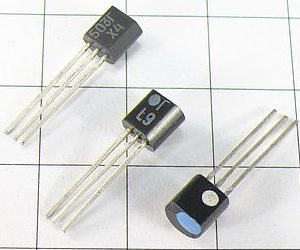

Транзисторы КТ503
Транзисторы КТ503 - кремниевые эпитаксиально-планарные , средней мощности, низкочастотные, структуры - n-p-n.
Предназначены для применения в усилителях низкой частоты, операционных, дифференциальных и импульсных усилителях, преобразователях.
Корпус пластмассовый КТ-26 (ТО-92). Маркируются цифро-буквенным графическим или цветовым кодом на корпусе транзистора. На боковой поверхности корпуса наносится условная маркировка - точка белого цвета, а на торце корпуса цветовая метка (точка):
- красная (тёмно-красная) - КТ503А,
- желтая - КТ503Б,
- темно-зеленая - КТ503В,
- голубая - КТ503Г,
- синяя - КТ503Д,
- белая - КТ503Е.
Масса транзистора не более 0,3 г.
Технические условия - аА0.336.183ТУ/02.
Импортный аналог: ZT341, BSS38.



Характеристики транзисторов КТ503
Таблица 1
| Прибор | IК max, мА | IК и max, мА | UКЭ0 max, В | UКБ0 max, В | UЭБ0 max, В | PК max, мВт | T, °C | Tп max, °C | Tmax, °C |
| КТ503 А | 150 | 350 | 25 | 40 | 5 | 350 | 25 | 125 | 85 |
| КТ503 Б | 150 | 350 | 25 | 40 | 5 | 350 | 25 | 125 | 85 |
| КТ503 В | 150 | 350 | 40 | 60 | 5 | 350 | 25 | 125 | 85 |
| КТ503 Г | 150 | 350 | 40 | 60 | 5 | 350 | 25 | 125 | 85 |
| КТ503 Д | 150 | 350 | 60 | 80 | 5 | 350 | 25 | 125 | 85 |
| КТ503 Е | 150 | 350 | 80 | 100 | 5 | 350 | 25 | 125 | 85 |
Таблица 2
| Прибор | h21Э | UКЭ, В | IЭ, мА | UКЭ нас, В | IКБ0, мкА | fгр, МГц | CК, пФ | CЭ, пФ | RТ п-с, °C/Вт |
| КТ503 А | 40...120 | 5 | 10 | 0,6 | 1 | 5 | 20 | 30 | 214 |
| КТ503 Б | 80...240 | 5 | 10 | 0,6 | 1 | 5 | 20 | 30 | 214 |
| КТ503 В | 40...120 | 5 | 10 | 0,6 | 1 | 5 | 20 | 30 | 214 |
| КТ503 Г | 80...240 | 5 | 10 | 0,6 | 1 | 5 | 20 | 30 | 214 |
| КТ503 Д | 40...120 | 5 | 10 | 0,6 | 1 | 5 | 20 | 30 | 214 |
| КТ503 Е | 40...120 | 5 | 10 | 0,6 | 1 | 5 | 20 | 30 | 214 |